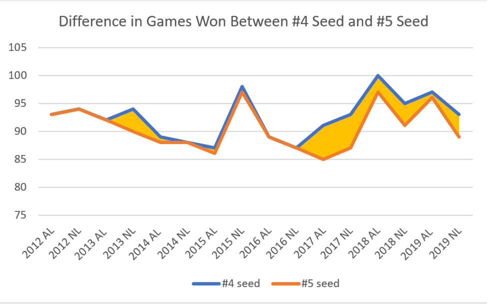
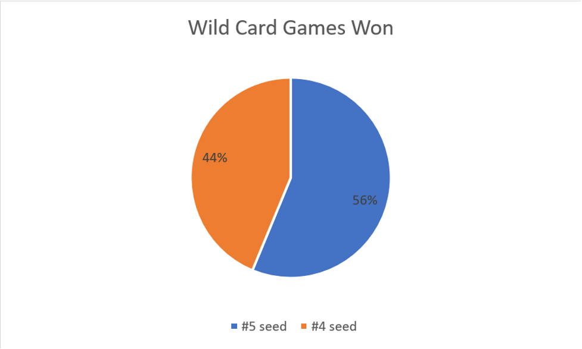
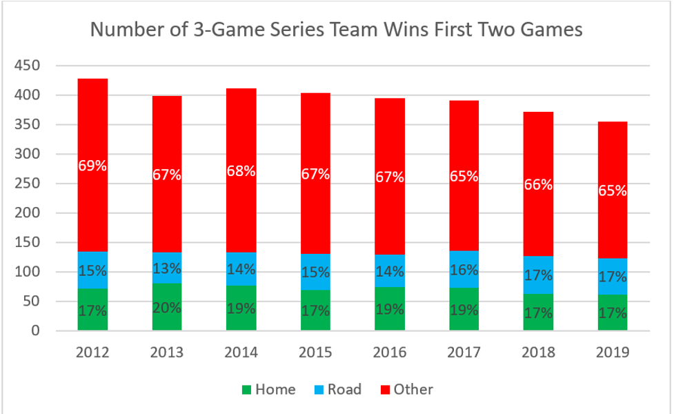
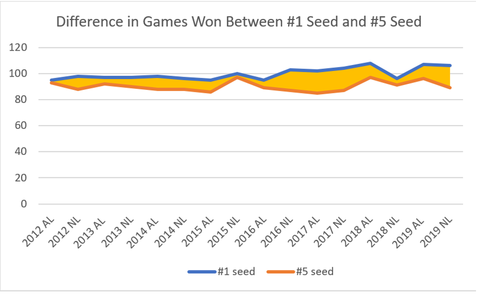

Let the Kids Play: Exploring the Benefits of an Expanded MLB Postseason and Redefined Wild Card Series
By Arnav Singhvi | November 28, 2020

Rejoice, fans of MLB teams that enter the playoffs after experiencing an amazing 162-game journey, just to be abruptly ended by 27 outs in an “anything-can-happen” Wild Card Game. With a newly introduced 16-team MLB postseason format as a result of the unfortunate COVID-19 pandemic, baseball has now opened more opportunities and avenues of potentially hoisting the Commissioner’s trophy. Where the novelty in the structure lies is in the redefined first-round series that is now a best-of-three playoff between the eight seeded teams (with the 1st seed playing the 8th, 2nd playing the 7th, 3rd playing the 6th, and 4th playing the 5th) as opposed to the usual one “go big or go home” Wild Card Game featured during regular seasons. While commissioner Rob Manfred cut down the regular season into 60 games and introduced this expanded playoff structure to advance the MLB’s season to end before November, this new format may have the potential to improve the competitiveness in the MLB postseason going forward by reducing luck and randomness and focusing on providing balance for how teams advance in the playoffs. But what’s wrong with the regular MLB postseason (if anything)? To illustrate, let’s first reflect on the regular Wild Card Game. The non-division-leader teams with the top two best records in each respective league face off in one game, playing in the home field of the team with the better record.
First off, the idea of a “home-field advantage” does not provide a significant advantage, as in recent years, the home team’s chances of winning only go up by 2-4 percent (Fangraphs). Just from a pure records viewpoint, the gap between these wildcard teams is minimal already, as from 2012 (when the Wild Card Game was first introduced) to 2019, the home team only won on average 1.34% more games in the regular season than the visiting team. Factoring in this difference plus a 2-4% home field advantage, the two Wild Card teams are still relatively close to each other in terms of game odds - and playing this pivotal culmination of a lengthy, strenuous 162-game season over one do-or-die game does not give a deserved advantage to the top-dog team.
Over the last eight seasons, road teams (the #5 seeds) have won more Wild Card games than home teams (the #4 seeds), with 9 of 16 games won by the #5 seeds. The question hence arises as to whether having a pivotal culmination of a lengthy, strenuous 162-game season to be decided by one do-or-die game serves justice to the top-dog Wild Card team that should have a deserved advantage. However, the three game Wild Card series offers to revise this “go big or go home” style with more opportunities. The three game series allows both teams to test multiple pitchers in their respective rotations, no longer having to watch a single starter pitch six no-hit innings just to give up three home runs in the 7th (see Clayton Kershaw) or having breakdowns from well-groomed bullpens built for these situations. This Wild Card format also shapes batter tendencies, giving more opportunities for adjustments as batters pan out over 10 at-bats vs 3 at-bats. Player acclimation ensues, as with the potential extra games, players and managers can develop and improve defensive field strategies based on their venue. Most importantly, teams that lose the first game are given a needed and much-deserved second chance to play their opponents, hoping to avenge their loss and push their series to the pivotal, deciding Game 3.
Additionally, as opposed to having close to the probability of flipping a coin decide which team wins the wild card playoff, a three-game series opens more possibilities in the number ways a team can win, thereby changing the respective probabilities for how either team can advance. For example, the chances of the home team winning two consecutive games in a regular-season 3 game series (from 2012-2019) (thereby sweeping the series) is about 18.1% whereas the chances for the road team doing so is about 15.1%, giving the home team some form of advantage but not entirely eliminating the chances for the road team to advance by sweeping their opponents. Out of the six possibilities in a three-game series, sweeps, or essentially one team winning the first two games, only occur about 33.2% of the time whereas, in a regular Wild Card Game, the chance of one team winning and advancing is close to 50-50. This opens more possibilities for the series going to three games and gives more opportunities to both teams playing each other and thereby earning a resounding series victory to advance in the playoffs. Furthermore, the new seeding format poses to benefit MLB teams by rewarding higher-seeded teams with greater relative advantages. Since the Wild Card Game’s debut, #1 seeds in both leagues have reached the World Series 7 times, winning the series 4 times. This sounds great except for the fact that #1 seeds also lost in the Division Series 7 times. After playing 162 games and typically winning more than 60% of the games, half of the teams could not make it out of the first series they played in and only 25% won it all. #1 seeds simply do not have the advantage in the postseason that they deserve for achieving such great regular season success. Whereas leagues like the NBA have the first-round series with a 1-seeded 55+ win team facing off against an 8-seeded 40-win team, with the difference in their records at about 18%, demonstrating a clear advantage for the home team over the underdog, the MLB postseason features teams that are only marginally better than each other.
If the worse wild card team beats the better one and advances, the team plays the best team in the league in the best-of-five series LDS. On average from 2012, the worst team to make the playoffs had only a 6% difference from the record of the #1 team in the respective leagues, greatly reducing the advantage a #1 seeded team should receive for performing well throughout the 162-game season.